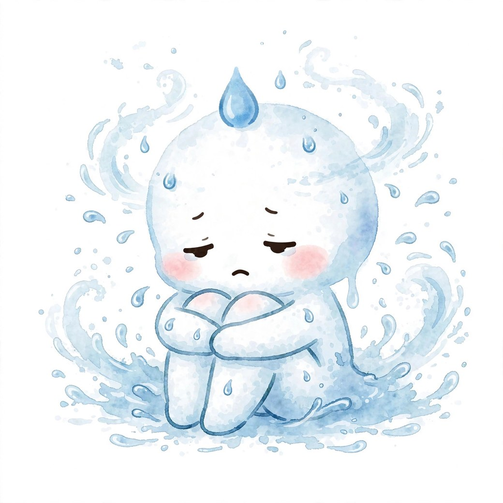
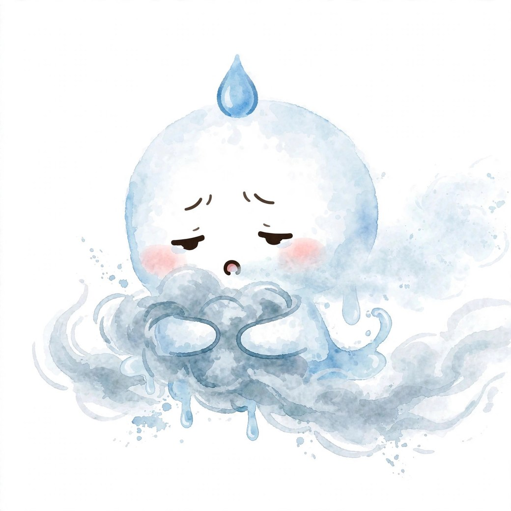
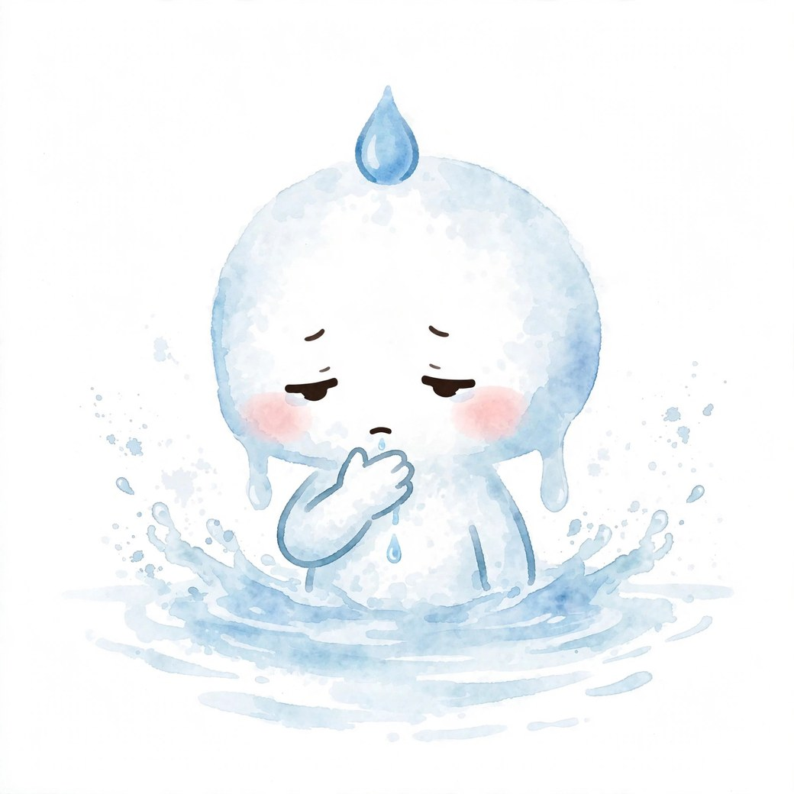
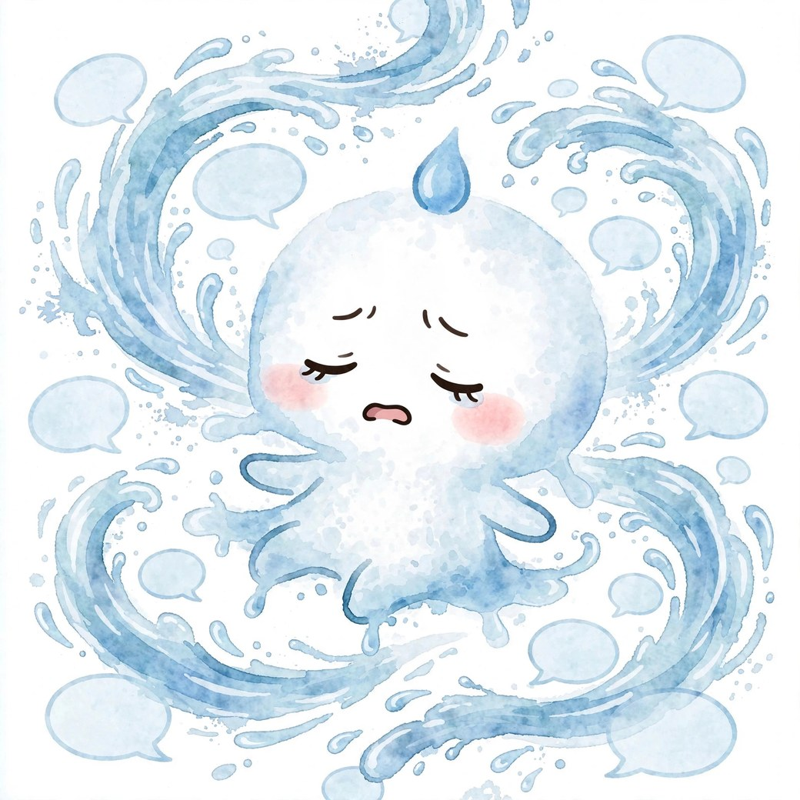
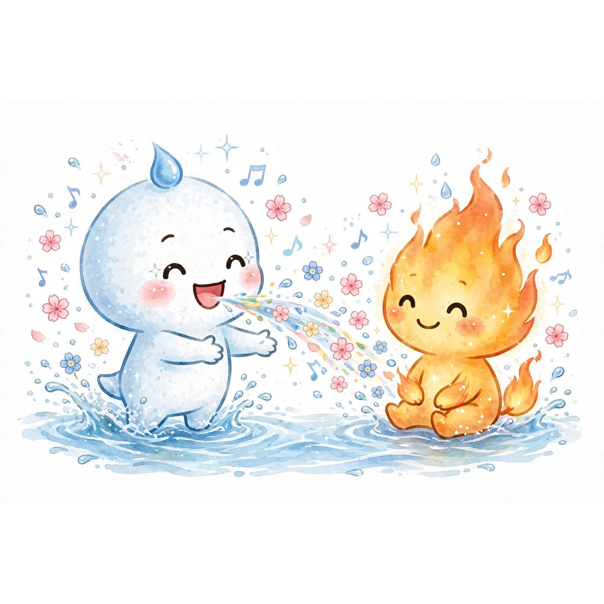
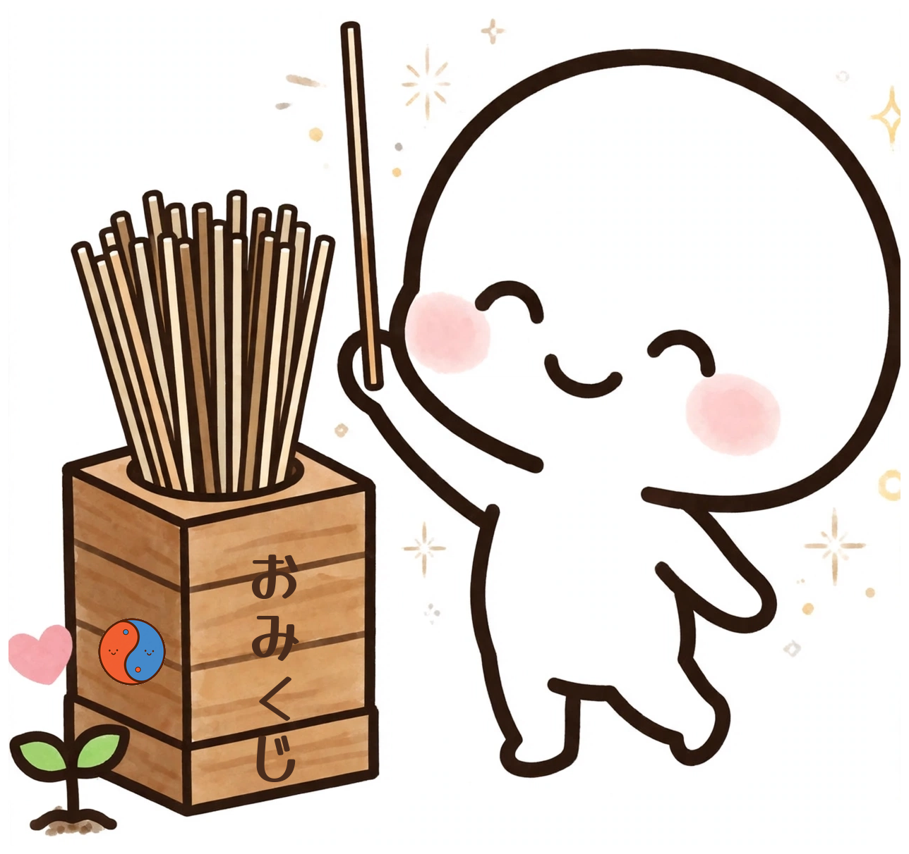

感じているのに、
言葉にできない。
たくさん感じているのに、言葉にならなくて、
モヤモヤが心と体に溜まっていく——。
火男子たけちゃんが、あなたの気持ちを
言葉にするお手伝いをします。
質問・相談をみんなで学ぶ「塾」のグループを、開設準備中です。
決まったら、このページでお知らせします。

こんなモヤモヤ、ありませんか
「感じる力」が強い、水の性質のあなたへ


困りごとの舞台は、家庭の中だけじゃありません。
人と関わる場面の、あちこちで起きています。
それは、あなたの言葉の力が足りないからじゃありません。
「感じる力」が強いからこそ、言葉に移すところで止まってしまうんです。

言葉にできると、どうなるか
このサポートで、届けたい変化
① モヤモヤの正体が、はっきり分かる
「私の気持ち、一体なんなの。このイライラは。この不安は」——そのモヤモヤを言語化して、はっきり分解していくと、自分で自分の気持ちを理解できるようになります。分からないまま抱えるのが、一番しんどいんです。
② 「これだよ」と、旦那さんにも伝えられる
自分の気持ちを自分で理解できると、旦那さんにも「これだよ」と、言葉で伝えられるようになります。「察してほしい」と待つだけじゃなくなるんです。
③ 自分のピースを、自分で扱えるようになる
体に感じているモヤモヤを、綺麗に分解して、整理整頓して、すべて言語化する。そうすると、自分のピース（パーツ）を、自分で取り扱えるようになります。心にも、体にも、頭にも、モヤモヤが溜まらなくなります。
④ すっきりして、話すのが楽しくなる
言葉にできたときの喜びは、とても大きいもの。自分の気持ちを自分の言葉で言えるすっきり感と自由さが、「言えた」という体験を重ねるごとに育っていきます。
⑤ 「壊す勇気」が、持てるようになる
水の性質は、環境の影響を受けやすく、環境を壊さないよう守ろうとして、気づくと自己犠牲していることが多いもの。自分の気持ちを言葉にできるようになると、「環境も壊す勇気」「自分に合わせてもらう勇気」、時には「自分さえも壊す勇気」を持てるようになります。例えるなら、周りの都合ばかりに傾いていた天秤を、「自分の都合を守る方」へ、少しずつ重くしていくこと。その積み重ねが、その人の中の火を育てます。

塾の進み方
質問・相談を送ると、たけちゃんが選んで答えます。
そのやりとりを、みんなで共有して学ぶ塾です
① 感じていることを、そのまま質問・相談で送る
まとまっていなくて大丈夫です。断片でも、体の感じでも、「なんかモヤモヤする」でも。そのまま送ってもらうところから始まります。一人で「うまく言わなきゃ」と、頑張らなくて大丈夫です。
② たけちゃんが選んで、言葉の候補を当てながら答える
「これは？」「あれは？」「こういう言葉は？」——寄せられた質問・相談に、たけちゃんがいろいろな言葉を当てながら答えていきます。考えるのは、あなた一人じゃありません。
③ 「あ、それそれ」が、見つかる
候補の中から、自分にぴったりの言葉にたどり着けたとき、モヤモヤがすっとほどけます。そして、その答えはグループのみんなで共有します。自分が質問しなくても、他の人の質問と答えを読む中で、「あ、それ私も」と自分の言葉が見つかることが、よくあるんです。
聞くのは、あなたの「内側」
水の性質は、自分と周りの境が薄くて、周りの情報に流されやすい。自分の内側を感じる暇もなく一日が終わって、自分のことが分からないままになりやすいんです。だからたけちゃんは、「あなたの気持ちは、どうなのかな」と、内側の気持ちを聞いていきます。それを繰り返すと、本人の「自分の気持ち」が育って、その人の中の「中心の火」が育っていきます。
「対等じゃなかった」にも、気づける
水の性質は押し負けやすく、一方的に言われていること自体に、気づかないことがあります。たけちゃんが「ここは一方的に言われているよ」と伝えると、初めて「対等じゃなかった」と気づく人が多いんです。対等に気づいて、押し負けない勇気が育つと、他人軸を持ちながら、自分軸もしっかり立つ——「二本軸」で立てるようになります。
目的は、反抗することじゃありません
育てたいのは、「自分はこうしたい、こう生きたい」という、内側から湧く思いを外に出して、相手に提示する力です。相手と戦うためじゃなく、自分の生きたい方を、ちゃんと相手に渡せるようになるためのサポートです。
大事なのは、正解の言葉を当てることじゃなくて、
「あなたの言葉」が見つかることです。
妻の体験談
水が強い妻が、言葉にできるようになるまで
「私は、水が強くて、たくさん感じているのに、言葉にするのが全然できなかったんです。たけちゃんとたくさん会話することで、感じていたけど言葉にできなかったものが、どんどん言葉として出てくるようになりました。体にたまらなくなった感じがあって、今は感じているものをたくさん話すことが、すごく楽しくなっています。とても力強くサポートしてもらって、本当に良かったと思っています。言語化の喜びを感じられる女性が増えたらいいなと思っています。」
―― たけちゃんの妻（水の性質が強い）
いただいた感想
これまでにいただいた言葉から
「実家でトラブルになりたくなくて、イヤな気持ちを隠してニコニコしてた。
子どもの頃から『何考えてるのかわからない子で困った』と母に言われるたびに、『私が本音を出すと、あなたがヒステリックにわめくからでしょ』と思って腹を立てていましたが。
何考えてるのか、わからないなら、わかるように表現します！！
実家でキレ散らかします❣️
たけしさん、本当にありがとうございます🙇♀️」
「ずっと苦しくて、しんどい日が続いていました。お話ししていくうちに、気持ちも呼吸も、スゥーと楽になりました。嬉しくて仕方ないです。本当にありがとうございます」
「本当に休んで良かった。たけしさんにも『助けてーーー』って言えて良かった🙇♀️
本当にありがとうございます。
自分を大切にする、が、また一歩できた日である。二歩また戻るけど、また自分の中の水と火の仲介をやっていこうと思う。
もうめっちゃ助かりました。これからも自分に優しくしていきます。」
「たけちゃんさんの一言一言は、妙に刺さり納得です。
私の性格知ってました!? 心の中、読んだでしょ!? ぐらい、刺されました🥹
自分は自分ですもんね！
でも、気づかせてもらい感謝です😊 ありがとうございます‼️」
「祖母を深掘りしたら、なんらかネガティブな感情があるようです。癒しは必要、どんな感情なのか理解も必要、という感じでした。もとになっている感情は、わたし自身のものではないようでした。
祖母から何か託されているのは感じていました。
すごい進みそうです！ また行き詰まったときは、質問させてください🙇 ありがとうございました😊」
「さっきまでの自分は何だったんだ？と思うくらい、めちゃくちゃ安心してます😻
たけちゃんさんには、本当に感謝します🙏✨」
「あれから祖父も含めた母をイメージしたり、『安心感に包まれますように』と願うと、私自身がホッとするような感覚を感じられます🙇♀️
『母にされたこと』をリストアップして何年も恨みに思っていましたが、たけしさんのガイドのお陰で視点がガラリと変わりました。
これからも腹が立つことは起きると思いますが、一番しんどい沼からは抜け出せた感覚があります🙇♀️」
「火と水のお話を見て、今まで悩んできた事柄がピッタリと当てはまりました！火を育てていくのが楽しみです。ありがとうございます！毎日やってみます」
「家族に対して、手伝って欲しいこと、嫌なことは伝えてみています」
「セッションのあと、すぐに爆睡しちゃいました。でも、朝起きて久々に心が軽かったのと、幸せなんだとかワクワクした感じ。嬉しいのかな、とてもポジティブでした」
「セッションを始めてから、ぼんやりしていた自分の核や、自分の考え方が見えるようになってきたり、自分の感覚に自信を持てるような出来事が起こりました」
「こうしてお話ししていると、何だか心の重心みたいなものが安定する感じがします。自分を信じて、研究してみます！ありがとうございます」
「たけちゃんとお話しして1週間経ってないのに、もう景色が違って見えます（笑）。これから変わる自分が楽しみになってます」
「私にも出来る事が沢山増えそうで、これからとても楽しみです」
「わあ！なんて素敵な表現ー。とても幸せな気持ちですー。今まで秘めていた私を表現していきますー！ありがとうございます。今日もハッピーです」
「ありがとうございます。今日、納得いかないなって思う事が起こったのですが、気持ちを言葉にして伝える事が出来ました。今までの私は上手く言葉に出来なくて、我慢すれば良い、伝わって欲しいなど、モヤモヤしていました。今日、自分の変化が分かりました」
「いつも自分の気持ちを伝えるとなると、泣いてしまう事がほとんどでした。後から本当の思いが出てきて、また言えなかったと悔しくなったり。でも今日はしっかり落ち着いて、言葉が出て来て、話が出来たんです。自分でも私の思いがはっきり分かりました。嬉しいです！！本当にありがとうございます」
「私、寝つき悪くてどうにかならないかなって、ずっと思ってたんですよ！朝の目覚め、とってもよくて最高です。ありがとうございます」
「買い物に行って、個人の飲食店でテイクアウトをしました。店員さんが気さくに話しかけて下さり会話になったのですが、今までの私は言葉を選びすぎるせいか、一生懸命話すような感じでした。今日はスラスラ言葉が出て来て、変化を感じました。本当に生活の一コマという感じですが、生きやすい様な感覚になります。心が穏やかに過ごせています」
「たけちゃん、こんにちは。だんだん、意識するだけで心に火が灯る感覚になってきました。伝えたいことは伝えて、家族も変わってきています」
「ほおおおー！なるほどですー。分かりやすく教えていただき、ありがとうございます！水と火のバランスを整えて頂いてから、明らかに自分の意識が変わり、変化が起きてます。素敵な経験をさせていただき、感謝しております」
「見ず知らずの私なのにも関わらず、ご丁寧に関わって頂き、今まで知らなかった自分を見つけてくださった、たけちゃんには感謝しても仕切れません。とても嬉しいです。ありがとうございます。たけちゃんのこれからのご活躍、応援しております」
「いつもありがとうございます。ここ数日、楽しく日常を過ごしています。不安に思う事もあまり無く、人は人、私は私といった感じで気にならなくなりました。たけちゃんのセッションに出会えて、ほんと良かったです。ありがとうございます」
「いつもメッセージをくださり、ありがとうございます。最近、本当に将来に対する不安が全然出てこなくなりました！！たけちゃんのお陰です」
「そうですか。胸がふわっと軽くなるようで、身体がポカポカしてリラックスできます」
「最近、メンタルも安定してます。良いご縁に恵まれている気がします。ありがとうございます。画像を見たら、胸がスッキリする感じがします」
たけちゃんについて
心体調整塾 たけちゃん

たけちゃんの診断タイプ：🔥✦ カリスマ太陽リーダー
（成熟した炎の指導者）
僕は「火」が強い人間です。言葉で考えて、言葉で整理するのが得意な分、感じることは苦手でした。妻はその真逆で、たくさん感じているのに言葉にできない、「水」の強い人です。
結婚15年の会話の中で、妻が自分の気持ちを言語化して、外に出して表現するのを、たくさん手伝ってきました。今では妻以外にも、同じように「感じているのに言葉にできない」女性たちの言語化と、気づきのサポートをしてきています。
火の力——言葉にする力で、水の気持ちを言葉に変えるお手伝いをする。それが、火男子の僕だからこそできることだと思っています。
食品工場 製造技術者
心と体の整体師研究
土木設備 ダム河川 技術者
夫婦15年研究
心体調整塾 たけちゃん
まず、知ることから
無料で読める・使えるもの
 無料診断
無料診断
火水性質診断（12タイプ）
30の質問で、あなたの火と水の割合と成熟度を読み解きます。自分が「水」に強いかどうかを知る、最初の一歩にどうぞ。

毎日の習慣火水おみくじ
その日の火と水のバランスを整える、一言メッセージ。毎朝の小さな実践にどうぞ。
 全体像
全体像
火水性質分析の全体像を読む
火水の考え方の全体像をまとめた、中心の記事です。診断のあとに読むと、結果の意味が深まります。
 絵本サイト
絵本サイト
火水絵本
物語絵本『ひーくんと みーちゃん』と、理論絵本（基本編）。どちらも無料で、最後まで読めます。
 実例集・サイト版
実例集・サイト版
火水相談｜夫婦のすれ違い実例集
夫婦のすれ違い場面を火水で読み解く実例集のサイト版です。気になる場面を、言葉で検索して読めます。
たけちゃんリンク
すべての窓口をまとめたページです。noteの記事、Instagram、Threads、LINEスタンプなどはこちらから。
2つのグループ（開設準備中）
「私も、言葉にできるようになりたい」
そう思ってくださった方へ
LINEグループ（無料相談）
無料で参加できる、LINEのグループです。寄せられた質問・相談の中から、週3〜5個くらいを目安に、たけちゃんが選んで答えます。自分の質問が選ばれなくても、他の人の質問と答えを読むことで、自分の気持ちを言葉にするヒントが見つかります。
ただいま開設準備中です
申し込む（準備中）noteメンバーシップ
noteのメンバーシップ（有料）です。週10〜15個くらいの質問・相談への回答に加えて、「火パワーアップ」の学習もできます。もっとたくさん質問したい、しっかり学びたい方向けのグループです。
ただいま開設準備中です
申し込む（準備中）開設が決まったら、このページとInstagram・noteでご案内します。